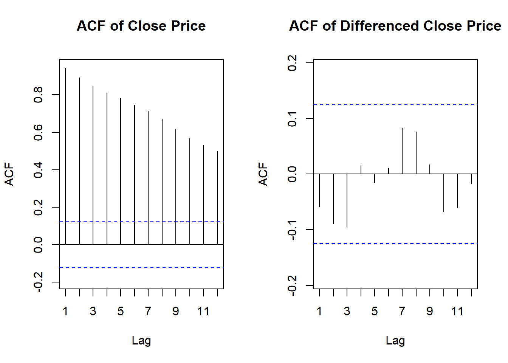

Period (in weeks) Time series value 1 10 2 14 3 20 4 18 5 22 If we use a three-week moving average to forecast, what would be the forecast for week 6? Round your answer to TWO decimal places when necessary.
library(zoo)
Warning: package 'zoo' was built under R version 4.3.3
Attaching package: 'zoo'
The following objects are masked from 'package:base':
as.Date, as.Date.numeric
time_series <-c(10, 14, 20, 18, 22)moving_avg <-rollmean(time_series, k =3, fill =NA, align ="right")forecast_week_6 <-tail(moving_avg, n =1)print(round(forecast_week_6, 2))
[1] 20
Forecasting Wal-Mart Stock :
walmart<-read_excel(“WalMartStock.xls”)
Here, we focus on the Wal-Mart daily closing prices between February 2001 and February 2002. The data is available at finance.yahoo.com and in WalMartStock.xls.
Which of the following codes produces the following time plot of the differenced series for the Wal-Mart daily closing prices?
At significance level = 0.01, does the AR model indicate that this is a random walk? Explain how you reached your conclusion in your supported R notebook file.
walmart stock is found in path “C:- nd.edu-Datasets.xls”
library(readxl)library(forecast)library(tseries)
Warning: package 'tseries' was built under R version 4.3.3
fit <-Arima(walmart$Close, order=c(1,0,0))fit2 <-Arima(diff(walmart$Close, 1), order=c(1,0,0))summary(fit)
Series: walmart$Close
ARIMA(1,0,0) with non-zero mean
Coefficients:
ar1 mean
0.9558 52.9497
s.e. 0.0187 1.3280
sigma^2 = 0.9815: log likelihood = -349.8
AIC=705.59 AICc=705.69 BIC=716.13
Training set error measures:
ME RMSE MAE MPE MAPE MASE
Training set -0.005900455 0.9866824 0.7687247 -0.04870259 1.483133 0.9799494
ACF1
Training set -0.02979752
summary(fit2)
Series: diff(walmart$Close, 1)
ARIMA(1,0,0) with non-zero mean
Coefficients:
ar1 mean
-0.0579 0.0207
s.e. 0.0635 0.0599
sigma^2 = 0.9986: log likelihood = -349.3
AIC=704.6 AICc=704.7 BIC=715.13
Training set error measures:
ME RMSE MAE MPE MAPE MASE
Training set -0.0001504841 0.9952397 0.7789423 89.56379 106.2976 0.664562
ACF1
Training set -0.005492711
par(mfrow=c(1,2)) Acf(walmart$Close, lag.max =12, main ="ACF of Close Price")Acf(diff(walmart$Close), lag.max =12, main ="ACF of Differenced Close Price")

##Question 7
Use the following information for questions 5-10.
Souvenir Sales : The file SouvenirSales.csv contains monthly sales for a souvenir shop at a
beach resort town in Queensland, Australia, between 1995 and 2001. Back in 2001, the
store wanted to use the data to forecast sales for the next 12 months (year 2002). They
hired an analyst to generate forecasts. The analyst first partitioned the data into training and
validation periods, with the validation set containing the last 12 months of data (year 2001).
She then fit a regression model to sales, using the training period.